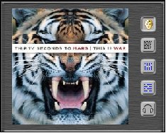

|
Cover
|
Unter der Playeranzeige können fünf verschiedene Dinge
angezeigt werden. Das erste ist die Anzeige des Covers zum aktuellen
Titel.

Das Cover wird dabei aus dem ID3-Tag ermittelt, aus einer Bilddatei "in
der Nähe" der Audiodatei auf der Festplatte. Wenn kein Cover
gefunden wurde, kann Nemp optional im Internet nach einem passenden
Cover suchen.
Weiteres zum Thema "Cover" beim Coverflow.